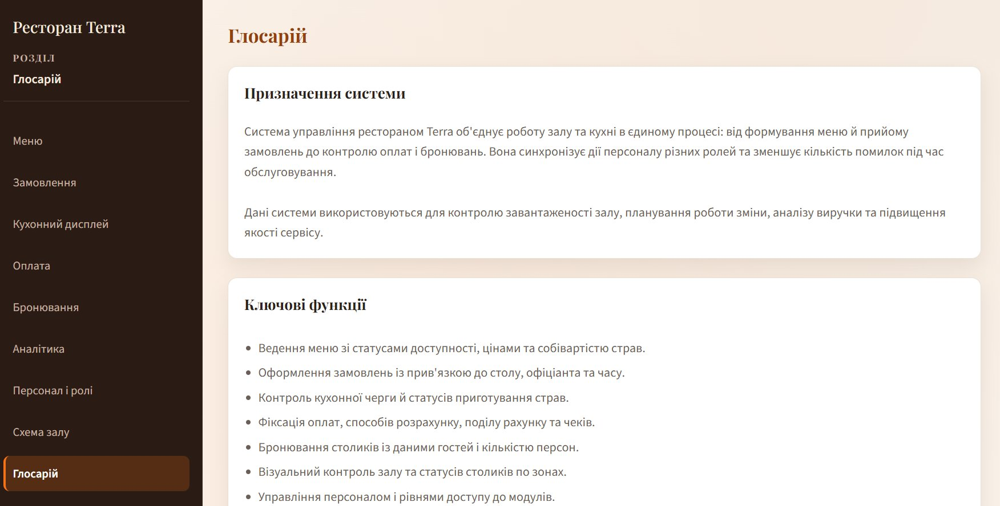

Гарячі зони інтерфейсу
Інтерактивні елементи, які реагують на дію користувача — натискання, вибір зі списку, введення тексту.
Ліва панель навігації
- Кнопки модулів — перемикають активний розділ. Поточний виділений помаранчевою смугою зліва.
- Назва ресторану — незмінний заголовок панелі.
- Поточна роль — відображає роль, з якою здійснено вхід.
- Кнопка «Вийти» — червона кнопка внизу панелі, завершує сеанс.
Кнопки прихованих модулів не відображаються — відповідно до прав вашої ролі.
Форма додавання (верхня панель)
- Поля вводу — активуються кліком, підсвічуються помаранчевою рамкою при фокусі.
- Кнопка «Додати» — оранжева кнопка, зберігає новий запис і оновлює таблицю.
- Обов'язкові поля — якщо не заповнені, система показує підказку і не зберігає запис.
Таблиця записів
- Рядки таблиці — підсвічуються при наведенні курсору.
- Випадаючий список статусу — змінює статус запису безпосередньо в рядку, без відкриття картки.
- Кнопка «Редагувати» / «Деталі» / «Картка» — відкриває повну картку запису для редагування.
- Кнопка «Видалити» — червона, видаляє запис без підтвердження. Дія незворотна.
Видалення столика каскадно видаляє пов'язані замовлення, бронювання і позиції кухонної черги.
Картка деталей (нижня панель)
- Поля картки — відображають деталі обраного запису, доступні для редагування.
- «Зберегти зміни» — фіксує всі внесені зміни і оновлює таблицю.
- «Скасувати» — відміняє зміни, повертає картку до стану останнього збереження.
- Фото зони (для столиків) — можна задати URL фото або прибрати зображення.
Фільтри
- Поле «Пошук» — фільтрує список під час введення (за назвою, ім'ям, складом).
- Фільтри за статусом, датою, столиком — вибір з випадаючого списку, результат одразу оновлюється.
- Очищення фільтрів — встановіть значення «Усі» у кожному полі або очистіть дату.
Модальне вікно відновлення пароля
- Відкривається кліком на посилання «Забули пароль?» на екрані входу.
- Поле введення e-mail або логіну.
- Кнопка «Надіслати» — відправляє запит, з'являється повідомлення про прийом.
- Кнопка «Закрити» або клавіша Escape — закриває вікно.
Клавіатурні прийоми
| Клавіша | Дія |
|---|---|
| Tab | Перехід до наступного поля форми |
| Shift + Tab | Перехід до попереднього поля |
| Enter | Підтвердити дію у формі або діалозі |
| Escape | Закрити модальне вікно |
Див. також
Вигляд гарячих зон
